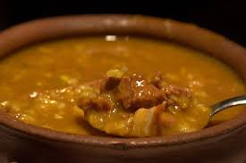

Traditional Argentine
Starter

Fried empanadas:
By: Mathias.Q
Delicious crispy meat patties fresh from the oven with its tempting aroma. The meat is perfectly cooked. Nothing is missing, do not hesitate to try it.
See recipeMain dish

Locro:
By: Siena.Z
Exquisite portion of locro with seasonal vegetables and a soft beef, with an incredible sauce so you can really feel what an Argentine palate is.
See recipeDessert

By: Siena Z.
Creamy and smooth flan with a sweet layer of caramel and an incredible portion of dulce de leche, giving this dessert an incredible taste and Argentine flavor
See recipe